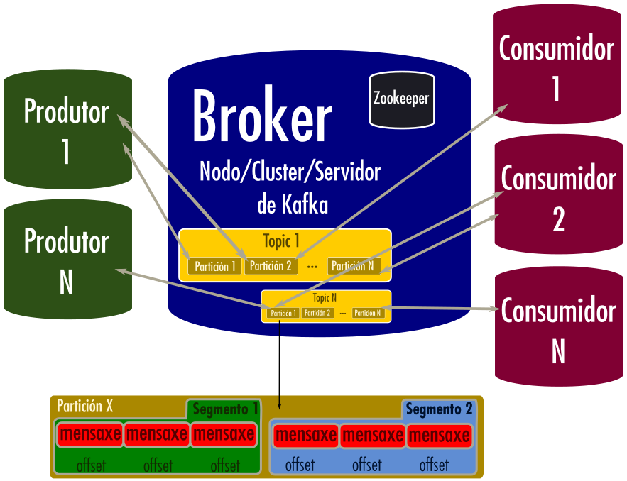

➿ Apache Kafka — 🐜️ Conceptos básicos

Apacha Kafka é unha plataforma distribuida en tempo real para streaming de datos. Foi desenvolvida por Linkedin e posteriormente donada á Apache Software Foundation. Está escrito en Java e Scala.
Imaxina un servidor de IRC ou de discord pero para aplicacións. Hay temas (ou canles) dos que queres falar e cada aplicación pode enviar ou ler mensaxes, sen que se perdan.
Se ves do mundo dos microservicios, sonarache o protocolo MQTT: Message Queue Telemetry Transport. Este esquema segue un sistema de publicación ↔ suscripción moi parecido ao de Apache Kafka. MQTT é un protocolo cunha especificación para a capa de transporte máis non o contido o u como funciona a aplicación. Os programas con soporte MQTT deberían ser compatibles entre si, por exemplo:
Nestes sistemas, aínda que se pode producir/consumir mensaxes a distintas velocidades, podería chegarse a perder algunha. Está pensado máis para a inxesta en tempo real.
En Kafka non se perden mensaxes, xa que se persisten (gardan) por eso as veces, algunhas persoas considérano como unha base de datos por algunhas das súas características de persistencia, recuperación de datos, particionamento, etc.
Por outra banda, Apache Kafka está deseñado para ser depregado como un cluster de varios nodos, fortalecendo así a súa estabilidade. Emprega o seu propio protocolo de rede, polo que non ten porqué ser compatible con MQTT de xeito directo (aínda que existen conectores e implementacións para conseguir esta compatibilidade).
A vantaxe de Apache Kafka radica na súa estabilidade xa que é un sistema que pode estar distribuido e replicado.

Apache Kafka emprega un commit log distribuido
Broker
Un cluster está formado por varios brokers de Kafka que se comunican entre si empregando Zookeeper.
Aos servidores de Kafka dun cluster se lles chama Brokers.
Cada broker ten topics e recibe e garda as mensaxes dos produtores e tamén permite aos consumidores recoller as mensaxes.
Para o proceso de descubrimento, o cliente (produtor ou consumidor) debe poder resolver por DNS alomenos un broker de kafka (tamén chamado bootstrap server). Unha vez se conecta a un servidor, recibirá a información de como conectar ao cluster enteiro. Ollo, o resto de hosts dos bootstrap servers deben poder resolverse tamén.
Produtor
Os produtores mandan mensaxes aos topics, estes mensaxes escríbense nunha partición. As mensaxes poden ser enviadas asíncronamente.
Os productores deben recuperarse automáticamente en caso de fallos no broker e deben decidir a que broker escribir. Sempre hai un líder para un topic/partición dado e se falla, outro cunha réplica toma o control.
Consumidor
Len as mensaxes dos topics/temas/canles.
Deben manter un rexistro da partición e do offset porque os brokers de Kafka non teñen estado (stateless).
Debido a esto poden rebobinar ou saltar a calquera punto nunha partición. Deben recuperarse automáticamente no caso de fallos no broker.
Grupos de consumidores
- Un conxunto de varios consumidores coordinados para consumir os datos xuntos do mesmo topic.
Que ocorre cando se presenta un fallo na recuperación?
- Se un consumidor morre, será capaz de ler hacia atrás dende onde o deixou, empregando o offset e a partición que terá almacenados.
- O grupo de consumidores debe rebalancearse automáticamente no caso que un consumidor do grupo morra ou se son engadidos novos consumidores.
Topic/Temas
Un topic é como unha canle de información á que nos podemos unir para producir/consumir (enviar/recibir) mensaxes. Algo así como unha sorte de canle dun IRC ou de discord.
As mensaxes que chegan aos topics forman o "data stream" e gárdanse como clave/valor. Ás mensaxes tamén se lles pode chamar rexistros (records).
Datos que hai nunha mensaxe:
- Key: Chave (pode estar vacía).
- Value: Valor (pode estar vacío).
- Tipo de compresión: Ninguha, GZIP, snappy → Google, ideas de LZ77.
- Cabeceira (opcional).
- Partición e offset.
- Timestamp (marca de tempo).
Kafka sabe en que estado está cada consumidor e lle vai enviando as mensaxes.
As mensaxes son inmutables, unha vez se escriben a unha partición, non poden cambiar.
Poden conter calquer tipo de datos (almacénase en formato binario) polo que deberemos serializalos/deserializalos correctamente (codificalos/descodificalos).
⚠️ Non reinventes a roda! Hai librarías que fan todo o traballo de serialización/deserialización por nos para os formatos que máis se soen empregar con Kafka: JSON e Avro.
Un consumidor pode unirse a un tópico (canle) para recibir o seu "data stream".
Debido a arquitectura de alta dispoñibilidade de Kafka, cada topic ten un factor de replicación ou Replication Factor (idealmente maior a 1). Cada réplica é idéntica byte a byte. Se un broker cae, outro broker que ten a réplica dos datos pode pasar a servila.
O código empregado nos produtores e consumidores debería ter en conta a propiedade da idempotencia (se recibes a mesma mensaxe duplicada, detectala ou que non afecte).
Particións
Os topics divídense en diferentes particións, cada partición toma a forma dun commit log estruturado.
Está ordeada, é inmutable e as mensaxes engádense ao final. Unha partición non se pode dividir entre dous ou máis brokers ou discos, crearíase unha nova a continuación.
Offset
As mensaxes de cada partición teñen un número secuencial asignado chamado offset que indenficia de forma unívoca cada mensaxe dentro dunha partición (o número é único dentro da partición).
Líder da partición
Para cada partición so un broker pode actuar como líder nesa partición, o resto poden replicar os datos e son ISR (in-sync replicas).
Os produtores so poden enviar os datos ao broker que sexa o líder desa partición, mentres que os consumidores por defecto lerán o dato tamén do líder (aínda que dende a versión 2.4 de Kafka, poden lelo de calquera réplica sincronizada).
Se cae un líder, unha das réplicas que teña unha copia sincronizada dos datos, toma o papel de líder.
Zookeeper
É un servidor de código fonte aberto que permite a coordinación distribuida. Baseado no algorimo de consenso Paxos.
Manten datos de configuración e segue a relación de líder-seguidor (leader/follower) ao longo de tódalas particións.
En canto ás versión de Kafka e Zookeeper:
- Versións inferiores e iguais a 2.x precisan Zookeeper de xeito obrigatorio.
- Versións 3.x e maiores poden funcionar sen Zookeeper (empregando Kafka Raft/KRaft).
- A partires da versión 3.3 KRaft considérase estable e válido para contornos de produción.
- A partires da versión 4.0 está planeado eliminar ZooKeeper.
Mantén a lista de brokers no cluster, axuda a elixir o líder de cada partición e envía as notificacións a Kafka no caso de cambios (un broker morre, bórrase un topic, créase un topic, levántase un broker...)
Os offsets non se gardan en Zookeper dende a versión 0.10 de Kafka, agora son os consumidores os que gardan estes offsets en Kafka, nun topic chamado __consumer__offsets.
Polo tanto, cando un consumidor morre, poderá ler este topic e recuperarse xusto dende onde deixou a lectura.
Cousas da entrega e outras características
Acuses de recibo / Confirmacións (ACK — Acknowledgement)
Os produtores poden pedir recibir confirmacións das escrituras.
- acks=0. O produtor non espera e poderían perderse datos
- acks=1. O produtor espera pola confirmación do líder (pérdida esporádica de datos cando cae o líder e non hai copias confirmadas).
- acks=todas. O produtor espera pola confirmación do líder e das réplicas co que idealmente non habería posbilidade de perda de datos.
Un produtor pode mandar unha "key" coa mensaxe de xeito que mensaxes coa misma "key" vaia á mesma partición. Se esta "key" é null, entón os datos mandaranse cun algoritmo de Round Robin entre as particións.
As mensaxes da mesma partición mantéñense en orde porque se le en orde de menor a maior offset.
Esta orde non se mantén entre particións (offsets repetidos en diferentes particións, non na mesma) polo que se queremos todas as mensaxes ordenadas, deberemos empregar un topic cunha soa partición.